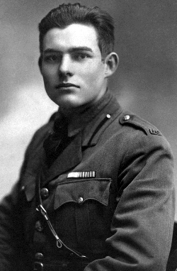
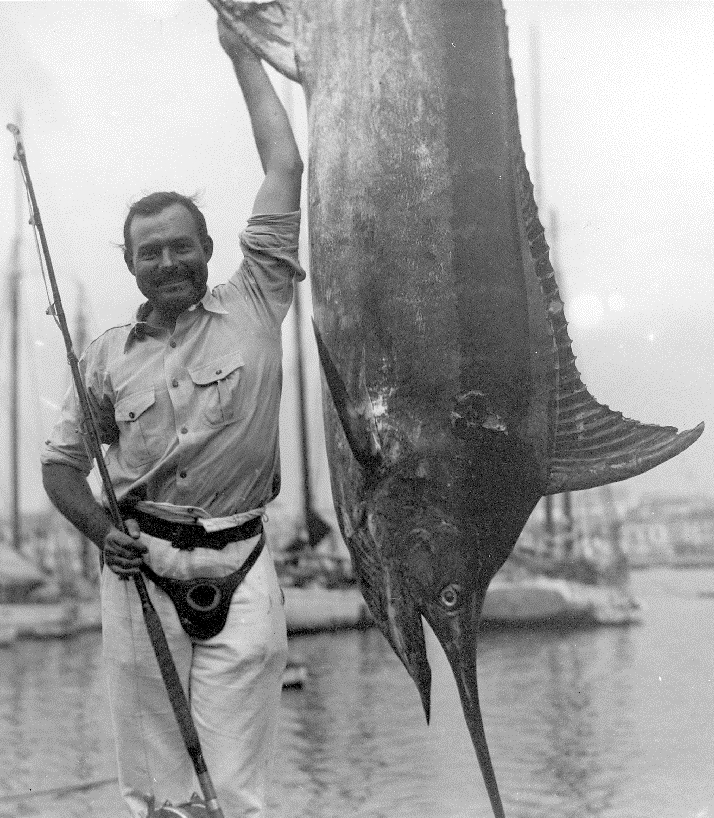

Ernest Hemingway
American novelist, short story writer and journalist

Ernest Hemingway, famous author and journalist, was born in the affluent Chicago suburb of Oak Park, Illinois, on July 21, 1899. His father was a doctor; his mother, a musician.
As a young man, he was interested in writing; he wrote for and edited his high school’s newspaper, as well as the high school yearbook. Upon graduating from Oak Park and River
Forest High School in 1917, he worked for the Kansas City Star newspaper briefly, but in that short time, he learned the writing style that would shape nearly all of his future work.
As an ambulance driver in Italy during World War I, Ernest Hemingway was wounded and spent several months in the hospital. While there, he met and fell in love with a Red
Cross nurse named Agnes von Kurowsky. They planned to marry; however, she became engaged to an Italian officer instead.This experience devastated Hemingway, and Agnes became the basis
for the female characters in his subsequent short stories “A Very Short Story” (1925) and “The Snows of Kilimanjaro” (1936), as well as the famous novel “A Farewell To Arms” (1929).
This would also start a pattern Ernest would repeat for the rest of his life – leaving women before they had the chance to leave him first. Ernest Hemingway began work as a journalist
upon moving to Paris in the early 1920s, but he still found time to write. He was at his most prolific in the 20s and 30s. His first short story collection, aptly titled “Three Stories and Ten Poems,” was published in 1923.
His next short story collection, “In Our Time,” published in 1925, was the formal introduction of the vaunted Hemingway style to the rest of the world, and considered one of the most
important works of 20th century prose. He would then go on to write some of the most famous works of the 20th century, including “A Farewell to Arms,” “The Sun Also Rises,”
“For Whom the Bell Tolls,” and “The Old Man and the Sea.” He also won the Nobel Prize for Literature in 1954.
Ernest Hemingway lived most of his later years in Idaho. He began to suffer from paranoia, believing the FBI was aggressively monitoring him. In November of 1960 he began
frequent trips to the Mayo Clinic in Rochester, Minnesota, for electroconvulsive therapy – colloquially known as “shock treatments.” He had his final treatment on June 30, 1961.
Two days later, on July 2, 1961, he committed suicide by shooting himself in the mouth with a twelve-gauge shotgun. He was a few weeks short of his 62nd birthday. This wound up
being a recurring trend in his family; his father, as well as his brother and sister, also died by committing suicide. The legend of Hemingway looms large, and his writing style
is so unique that it left a legacy in literature that will endure forever.
